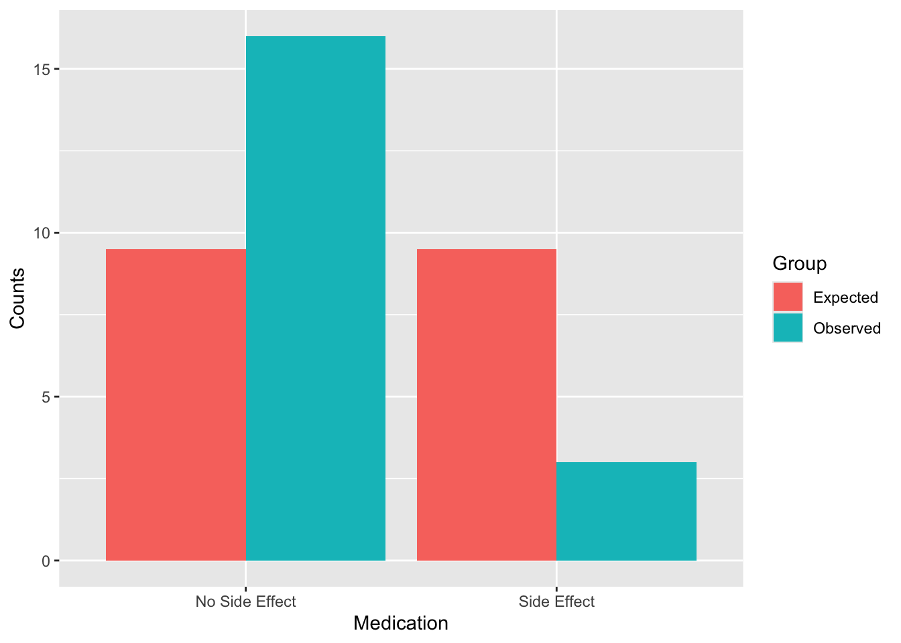
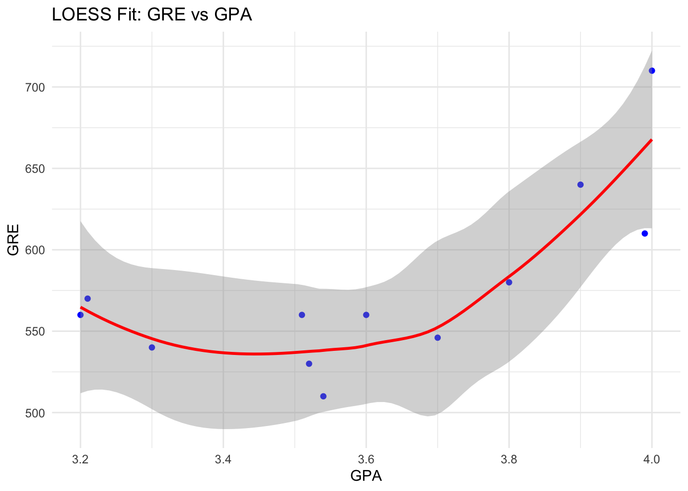
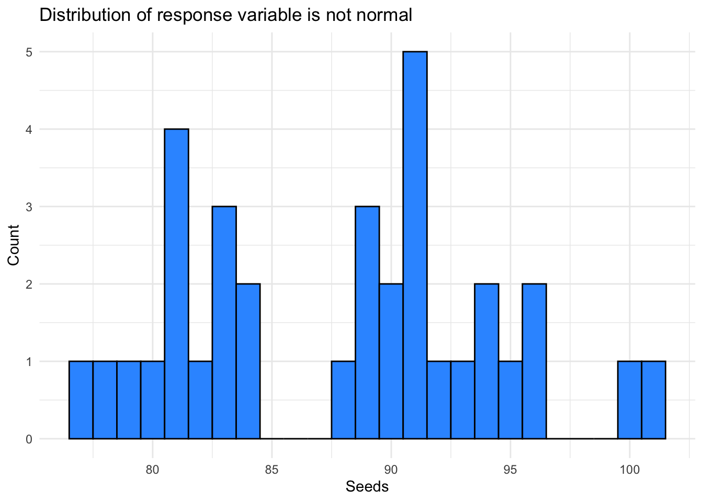

Using non-parametric tests to examine different kinds of data where the predictor and response variables are both categorical or where the data is generally ‘ill-behaved.’
For each of the following questions, please provide your analysis and an interpretation (e.g., written as you would in a scientific publication). If it helps to describe your result, add tables or figures to help make your case. For every case, explain why you chose the particular analysis you did and demonstrate the reasons from the data.
The FDA has suggested a change in a medication that has been shown to have detrimental side effects in half of the patients. A clinical trial was conducted with nineteen patients; only three reported side effects. Did the change make a significant difference?
# Using a binomial test on the new data (n = 19)effect <-3no_effect <-16new_data <-c(effect, no_effect)p_effect <-0.50FDA_df <-data.frame( Counts =c( new_data, 0.5*sum(new_data), ( (1-0.5) *sum(new_data) )),Medication =c("Side Effect", "No Side Effect", "Side Effect", "No Side Effect"),Group =c("Observed","Observed", "Expected", "Expected") )ggplot( FDA_df, aes(Medication,Counts, fill=Group) )+geom_bar( position="dodge", stat="identity")

my_binomial <-binom.test(new_data, p = p_effect)my_binomial
Exact binomial test
data: new_data
number of successes = 3, number of trials = 19, p-value = 0.004425
alternative hypothesis: true probability of success is not equal to 0.5
95 percent confidence interval:
0.03382625 0.39578455
sample estimates:
probability of success
0.1578947
The FDA suggested change to the medication DID make a significant difference in the side effects. I chose to use a binomial test with this data because the predictor and response variables are categorical and the outcome of each sampling can be classified into one of two groups. A binomial test of the null hypothesis “p = 0.50” resulted in a p-value of 0.0044 which is less than 0.05 and thus I must reject the null hypothesis - the change to the medication did not result in the same effect as previously. This means the change to the medication was a good one (if your goal is to reduce the occurrence of side effects). The probability of having a side effect with the changed medication was only 0.1579 or 16%. This is significantly different from the previous probability of having a side effect (50%). If I had a choice, I would take the changed medication.
Two different environmental remediation treatments are evaluated for the impacts on turbidity (measured using the Nephelometric Turbidity Unit or NTU). For regulatory reasons, turbidity is binned into four groups based on NTU: 0-15 ntu, 16-22 ntu, 23-30 ntu, and 31+ ntu. Do both treatments have the same impact on turbidity? Explain.
0-15 16-22 23-30 31+
Treatment A 6 14 18 8
Treatment B 30 32 17 3
chisq.test(turb$Treatment, turb$NTU_level)
Warning in chisq.test(turb$Treatment, turb$NTU_level): Chi-squared
approximation may be incorrect
Pearson's Chi-squared test
data: turb$Treatment and turb$NTU_level
X-squared = 16.527, df = 3, p-value = 0.000884
Both treatments do NOT have the same impact on turbidity. I chose to use a Pearson’s Chi-squared test with this data because both the predictor and the response are categorical and the outcome of each sampling can be classified into more than one group. A Pearson’s Chi-squared test using this data resulted in a p-value of 0.0009 (\(X^2\) = 16.527, df = 3). This is a significant p-value and thus I must reject the null hypothesis that there is no association between treatment type and turbidity level. There IS an association between treatment type (A or B) and turbidity level. These results should be interpreted with caution due to the small sample size - some of the NTU categories have less than 5 samples in them.
A dozen graduate students tried to determine if there was a relationship between their undergraduate GPA and their scores on the Graduate Records Examination. Look at these data and determine the extent to which they are related. Explain.
gre <-read_csv("grad_school.csv")gre %>%ggplot( aes(GPA, GRE) ) +geom_point(color ="blue") +stat_smooth(method ="loess", color ="red") +labs(title ="LOESS Fit: GRE vs GPA", x ="GPA", y ="GRE") +theme_minimal()

gre_fit <-loess(GRE ~ GPA, data = gre, span =0.85)gre_fit
Call:
loess(formula = GRE ~ GPA, data = gre, span = 0.85)
Number of Observations: 12
Equivalent Number of Parameters: 3.82
Residual Standard Error: 30.38
I chose to use a LOESS model when analyzing this data because the data are not linear and the sample size is small (n=12). Based on this LOESS model, there does appear to be a relationship between the students’ undergraduate GPA and their score on the Graduate Records Examination (GRE). The plot of the LOESS curve against the individual data points shows a positive relationship between GRE and GPA as GPA increases. However, the small sample size and the relatively large amount of residual standard error (RSE = 30.38) means these results should be interpreted with caution. There are likely other factors that are also influencing GRE scores beyond just GPA.
You are looking at fruit yield on dogwood. You designed an experiment with four different treatments and measured the total yield in germinated seeds. Are there differences in yield? Explain.
dogwood <-read_csv("DogwoodSeeds.csv")dogwood$Treatment <-as.factor(dogwood$Treatment)# Checking for normal distribution of response variable.dogwood %>%ggplot(aes(x = Seeds))+geom_histogram(bins =25, fill ="#3399FF", color ="black")+labs(x ="Seeds",y ="Count",title ="Distribution of response variable is not normal")+theme_minimal()

dogwood_fit <-kruskal.test(Seeds ~ Treatment, data = dogwood)dogwood_fit
Kruskal-Wallis rank sum test
data: Seeds by Treatment
Kruskal-Wallis chi-squared = 25.629, df = 3, p-value = 1.141e-05
Comparison Z P.unadj P.adj
6 C - D 4.819426 1.439718e-06 8.638308e-06
4 A - D 3.528887 4.173120e-04 2.086560e-03
3 B - C -2.917475 3.528783e-03 1.411513e-02
5 B - D 2.227388 2.592138e-02 7.776413e-02
1 A - B 1.432499 1.520010e-01 1.520010e-01
2 A - C -1.546890 1.218898e-01 2.437795e-01
YES, there are differences in yield between the four treatments. I chose to use a Kruskal-Wallis rank sum test with this data because the response variable is numeric and the predictor variable is categorical. In addition, the response variable is not normal. A Kruskal-Wallis rank sum test gave a p-value of 1.141e-05 (\(X^2\) = 25.629, df = 3), and therefor, I reject the null hypothesis that the median yield does not differ between treatments. There IS a difference between the median yields.
A Dunn post-hoc test showed that when looking at the differences between the treatments, the most significant difference is between the medians of Treatment C (n = 7, median = 95, min = 91, max = 101) and Treatment D (n = 8, median = 80.5, min = 77, max = 82) (p-value << 0.05). These results are to be expected as Treatment C had the highest yield and Treatment D the lowest yield. There are also significant differences (though not as significant) between Treatment A (n = 9, median = 91, min = 83, max = 96) and Treatment D (p-value = 0.002), and between Treatment B (n = 10, median = 86, min = 81, max = 91) and Treatment C (p-value = 0.014). The Dunn post-hoc test failed to find any significant differences between Treatments B and D (p-value = 0.078), between Treatments A and B (p-value = 0.152), or between Treatments A and C (p-value = 0.244).